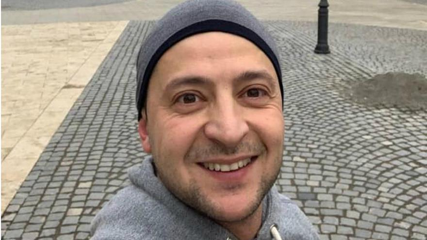

zelenkaUA

Login: zelenkaUA
Fullname: Volodymyr Zelensky
Date of registration: 2017/05/13 10:30:59
Bio:
Volodymyr Oleksandrovych Zelensky (Ukrainian: Володи́мир Олекса́ндрович Зеле́нський; born 25 January 1978) is a Ukrainian actor, screenwriter, comedian, director and politician serving as the 6th President of Ukraine since May 2019. He was inaugurated as President on 20 May.